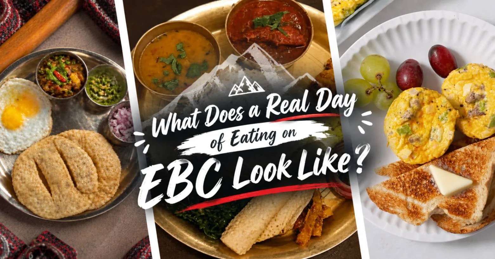
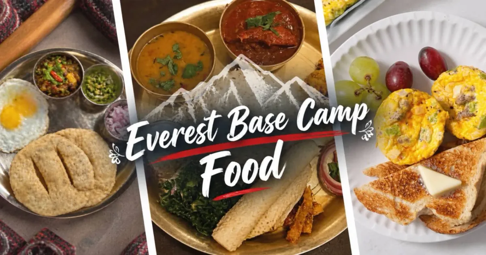
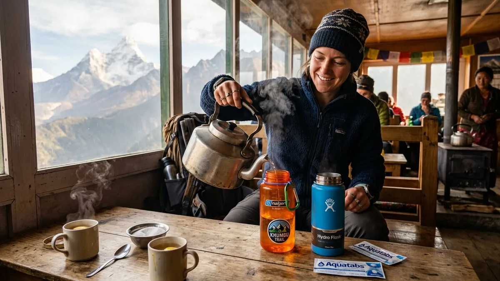
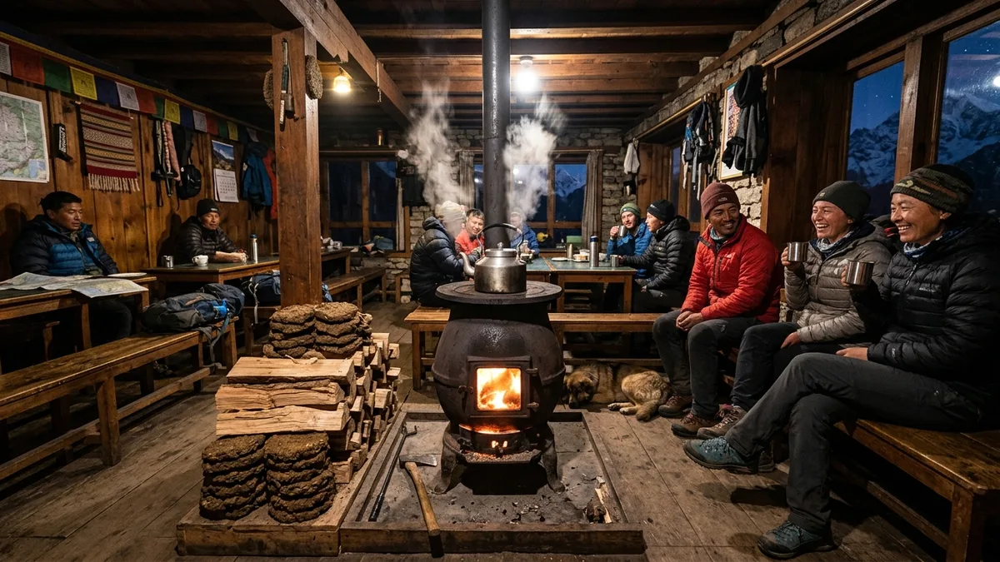

1. The High-Altitude Fuel Paradigm: Calories, Glycogen & Metabolism Above 3,500m

Trekking to Everest Base Camp demands monumental metabolic expenditure. On an average day between Namche Bazaar and Gorak Shep, a trekker carrying an 8kg daypack over steep alpine moraine burns between 3,800 and 5,200 calories per day.
Simultaneously, the human body undergoes a profound physiological shift known as high-altitude anorexia. Hypoxia triggers elevated levels of leptin (the satiety hormone) while depressing ghrelin (the hunger-stimulating hormone). You will find yourself feeling full after just a few bites, even though your glycogen stores are dangerously depleted.
Furthermore, metabolizing dietary fats requires significantly more oxygen molecules per unit of ATP generated than metabolizing carbohydrates. At 5,000 meters, where atmospheric oxygen is cut in half, your digestive system naturally struggles to process heavy fatty meats. Complex carbohydrates become your lifeblood, yielding 8% to 10% more energy per liter of oxygen consumed than fats or proteins.
| Nutrient Group | Target Daily Share | Why It Matters at Altitude | Prime Trail Sources |
|---|---|---|---|
| Complex Carbohydrates | 65% – 70% | Most oxygen-efficient fuel for ATP synthesis; sustains glycogen levels | Dal Bhat (rice), porridge, potatoes, Sherpa bread, noodles |
| Lean Protein | 15% – 20% | Prevents muscle catabolism during long 7-hour daily ascents | Lentils (dal), eggs, yak cheese, chickpeas, tofu |
| Healthy Fats | 10% – 15% | Provides slow-burning energy for cold night-time warmth | Yak butter, peanut butter, mixed nuts, sunflower seeds |
| Fluids & Electrolytes | 4.0 – 5.0 Liters | Counters moisture loss from rapid respiration; prevents blood thickening | Hot lemon ginger tea, garlic soup, ORS electrolytes, boiled water |
3. Breakfast on the Trail: Porridge, Tibetan Bread, Eggs & Fuel for the Morning
Trekking mornings in the Khumbu start early. Breakfast orders are submitted the previous evening so that hot food is waiting on the table between 6:30 AM and 7:00 AM, allowing for a swift departure before afternoon winds pick up.
Here are the most popular and nutritious breakfast choices:
- Oatmeal Porridge: The undisputed champion of trekking breakfasts. Served piping hot with honey, sliced apples, or cinnamon, oats release slow-burning complex carbohydrates over 4 to 5 hours of uphill climbing.
- Tsampa Porridge: The traditional Sherpa superfood made from roasted barley flour stirred into warm water, milk, or tea. Packed with fiber and micronutrients, tsampa has fueled Himalayan mountaineers for generations.
- Tibetan Bread (Gurung Bread): A thick, deep-fried flatbread with a golden, crispy crust and soft, steaming interior. Eaten hot with honey, jam, or yak cheese, it is pure caloric comfort.
- Pancakes: Available in plain, apple, banana, or chocolate varieties. While delicious, make sure to pair them with an egg for sufficient protein.
- Eggs (Any Style): Teahouses offer boiled, fried, scrambled, or cheese omelets. Boiled eggs are the safest option as they can be carried in your daypack as an emergency mid-morning protein snack.
- Muesli with Warm Powdered Milk: A crunchy, easy-to-digest cereal mix that requires minimal digestive strain on sensitive mornings.
4. The Sovereign Lunch & Dinner: 'Dal Bhat Power 24 Hour'

In Nepal, the famous saying emblazoned across t-shirts is: "Dal Bhat Power 24 Hour, No Toilet No Shower!" Far from being just a humorous slogan, Dal Bhat is the single greatest endurance meal on earth.
A traditional Dal Bhat plate consists of five harmonious components served on a stainless steel thali:
- Bhat (Rice): A generous mound of steamed white rice providing immediate glycogen replenishment.
- Dal (Lentil Soup): A warm, spiced broth made from yellow or black lentils simmered with turmeric, cumin, garlic, and ginger. It is rich in plant-based proteins, amino acids, and rehydrating fluids.
- Tarkari (Curried Vegetables): A fragrant vegetable stew of seasonal potatoes, cauliflower, peas, and green beans.
- Saag (Greens): Steamed wild spinach or mustard greens supplying essential dietary iron, magnesium, and fiber.
- Achar (Spicy Pickle): A fermented tomato, radish, or sesame condiment that stimulates sluggish taste buds dulled by thin mountain air.
The Sacred Rule of Free Refills: When you order Dal Bhat, the cook or host will repeatedly circulate through the dining hall offering generous second and third servings of rice, dal, and curry at no extra charge. No other item on the menu offers unlimited portions. If you are hungry after a grueling 6-hour trek, Dal Bhat is the only meal that guarantees you leave the table 100% full.
5. Noodles, Pasta, Potatoes & Sherpa Stew (Syakpa)
While Dal Bhat is the gold standard, Khumbu teahouses offer an impressive variety of hearty comfort dishes tailored for Western and Asian palates:
- Sherpa Stew (Syakpa): The quintessential traditional mountain dish. Syakpa is a thick, nourishing broth filled with hand-pulled flat dumplings, sliced potatoes, carrots, cabbage, and dried mountain herbs. It is intensely warming and easy on an upset stomach.
- Fried Potatoes with Yak Cheese: Khumbu potatoes are legendary across Nepal for their sweet, dense flavor due to high-altitude volcanic-like glacial soil. Boiled, pan-fried, and smothered in melted tangy yak cheese, this dish is pure energy.
- Momo (Nepalese Dumplings): Steamed or pan-fried dumplings filled with vegetables, mashed potatoes, or minced cheese, served with a zesty dipping sauce. Note: fried momos can sit heavily in the stomach above 4,000m; choose steamed momos for easier digestion.
- Chowmein & Fried Noodles: Wok-tossed noodles packed with cabbage, carrots, onion, and egg. A fast, familiar carbohydrate bomb that tastes delicious after a long day in the wind.
- Thukpa: A Tibetan-style hot noodle soup filled with vegetables in a savory spiced broth—perfect for thawing frozen fingers after arriving at Gorak Shep.
- Macaroni & Spaghetti: Boiled pasta served with tomato sauce, garlic, and grated yak cheese. While not gourmet Italian, it provides clean, easily digestible carbs that sit gently in the gut.
6. The Vegetarian Rule: Why You Should Avoid Meat Above Namche Bazaar
Ask any experienced expedition leader or medical doctor in Sagarmatha National Park, and they will give you one unanimous rule: Do not eat meat above Namche Bazaar.
The reasons are both cultural and biological:
- Buddhist Sacred Law: The Sherpa people practice Tibetan Buddhism. Under the religious sanctity of Sagarmatha National Park, the slaughter of any living animal (yaks, cows, sheep, chickens) is strictly prohibited.
- The Unchilled Supply Chain: Because slaughter is banned within the park, every single piece of chicken, buff (water buffalo), and pork must be slaughtered in lowland areas like Phaplu or Salleri. The meat is packed into open wicker doko baskets and carried uphill on porters' backs in ambient daytime heat for 3 to 5 full days before reaching villages like Dingboche or Lobuche.
- The Khumbu Belly Hazard: By the time raw meat reaches upper teahouses, it has experienced repeated freeze-thaw cycles without refrigeration. Consuming chicken sizzler or buff chili at Gorak Shep is the fastest way to contract bacterial gastroenteritis ('Khumbu Belly'), which causes severe vomiting, diarrhea, acute dehydration, and forced helicopter evacuation.
What About 'Yak Steak'?
Many lodges advertise 'Yak Sizzler' or 'Yak Steak' on their menus. In reality, pure female yaks (Naks) and breeding males are far too valuable for milk, wool, and breeding to be slaughtered for casual meals. Most 'yak meat' is actually older crossbreed dzokyo or water buffalo meat that has traveled for days without cooling. Save your steak craving for the world-class steakhouses in Kathmandu after completing your trek!
7. The Magic of Sherpa Garlic Soup: Natural Altitude Vasodilation
As you climb past 3,800m into Tengboche, Dingboche, and Lobuche, you will notice almost every Sherpa guide, porter, and experienced high-altitude trekker ordering a bowl of fresh Garlic Soup (known locally as Lhasun-ko-soup) before dinner.
This is not merely local superstition—there is compelling medical and biochemical rationale behind the practice:
- Allicin & Vasodilation: Crushed fresh garlic contains high concentrations of allicin and organic polysulfides. Inside the human bloodstream, these compounds react with red blood cells to produce hydrogen sulfide (H2S) and nitric oxide (NO), powerful signaling molecules that relax and dilate constricted vascular walls.
- Lowering Pulmonary Pressure: In thin air, hypoxia triggers hypoxic pulmonary vasoconstriction (tightening of blood vessels in the lungs), which can lead to High Altitude Pulmonary Edema (HAPE). Garlic's vasodilator properties help relieve this arterial tension.
- Peripheral Circulation: Garlic stimulates blood flow to icy fingers and toes, preventing cold injury during frigid Himalayan nights.
- Hydration & Electrolytes: A steaming bowl of garlic soup delivers 400ml of hot fluid packed with sodium and minerals, rehydrating parched throat membranes and soothing the dry 'Khumbu cough'.
8. Desserts, Alpine Bakeries & High Comfort Treats

One of the greatest surprises for first-time Everest trekkers is the flourishing tradition of high-altitude alpine bakeries.
The Legendary Khumbu Bakeries: Namche Bazaar is home to world-class coffee shops and German bakeries that use wood ovens and espresso machines. Savoring an authentic warm apple strudel, walnut brownie, or carrot cake accompanied by a hot Italian cappuccino at 3,440 meters is an unforgettable morale boost.
Higher up the trail in Tengboche and Dingboche, several lodges maintain cozy bakeries that bake fresh apple pies every morning using sweet Himalayan apples carried up from Solukhumbu orchards.
Teahouse Sweet Treats: Even the most remote lodges at Gorak Shep offer simple sweet comfort dishes on their dinner menus:
- Deep-Fried Snickers / Mars Roll: A fun Himalayan invention where a chocolate candy bar is wrapped inside a thin chapati dough pastry and lightly deep-fried. It provides an immediate 500-calorie sugar burst after a freezing trek.
- Apple or Banana Fritters: Sliced fruit dipped in sweet batter and pan-fried, dusted with cinnamon sugar.
- Rice Pudding / Custard: Warm, creamy sweet porridge that feels soothing on an irritated throat.
9. Hydration Architecture: 4–5 Liters Daily & What to Drink

In the cold, dry air of Sagarmatha National Park, your respiratory rate doubles to compensate for thin oxygen. With every breath, your lungs exhale moisture into the sub-zero atmosphere. If you drink only when you feel thirsty, you will be chronically dehydrated.
The Golden Hydration Rule: Every trekker must consume between 4.0 and 5.0 liters of fluid per day. Monitoring your urine color is mandatory: it should remain pale straw or clear. Dark yellow urine is an emergency warning sign of severe dehydration.
| Beverage | Hydration Efficiency | Caffeine Content | Best Time to Drink | Trail Verdict |
|---|---|---|---|---|
| Hot Lemon Ginger Honey Tea | Maximum | Zero | All day / evening | Top Choice: Soothes throat, aids digestion, warming |
| Black / Masala Milk Tea | High | Moderate | Breakfast & afternoon rest | Traditional comfort, mild caffeine lift |
| Sherpa Garlic Soup | High + Electrolytes | Zero | Dinner / evening | Essential: Promotes nocturnal vasodilation |
| Purified Cold Water + ORS | Maximum | Zero | During active trekking hours | Replenishes sodium and potassium lost in sweat |
| Coffee / Espresso | Moderate (diuretic) | High | Breakfast only (limit 1 cup) | Enjoy in Namche; avoid above Dingboche to prevent tachycardia |
| Beer, Spirits & Alcohol | Negative (severe dehydration) | Zero (depressant) | Post-trek in Lukla / Kathmandu ONLY | Forbidden: Suppresses nocturnal breathing; triggers AMS |
10. Water Purification Strategies: Filters, UV, Tablets vs. Plastic Ban
In 2020, the local government of Khumbu Pasang Lhamu implemented a strict ban on single-use plastic water bottles across the entire Everest region. This progressive environmental regulation has prevented tens of thousands of plastic bottles from piling up on fragile glacial trails.
To maintain your 4-liter daily hydration without generating plastic trash, use these proven purification methods:
- Teahouse Boiled Water: Every lodge sells boiled water by the liter or pot. The water has been brought to a rolling boil over a gas or bukhari stove, killing all bacteria, protozoa, and viruses. Pouring boiling water into your wide-mouth Nalgene bottle costs $2 to $4 per liter.
- Hollow-Fiber Squeeze Filters (Katadyn BeFree / Sawyer Squeeze): Highly effective for filtering tap or stream water into your bottles during the day. Crucial winter tip: Never let your filter cartridge freeze! If wet micro-tubes freeze overnight, the ice expands and ruptures the membrane, allowing pathogens through without visible damage. Keep your filter inside your sleeping bag at night.
- Chlorine Dioxide Tablets (Aquatabs / Micropur): The gold standard chemical backup. Kills all viruses, bacteria, and Cryptosporidium cysts without leaving an unpleasant chemical bleach taste. Always carry a strip of 20 tablets in your first-aid kit.
- UV Purifiers (SteriPEN): Highly effective in clear water, destroying 99.9% of microorganisms in 90 seconds. However, cold temperatures drain lithium batteries quickly, so keep spare charged batteries warm against your body.
11. Food Pricing Curve by Elevation: From Lukla to Gorak Shep
One of the first things trekkers notice is that the higher you climb, the higher food prices rise.
This is not price gouging. Every item in Gorak Shep has been flown into Lukla, loaded onto a porter or yak, and carried uphill over 60 kilometers of boulder-strewn moraine. A heavy sack of rice that costs $20 in Kathmandu costs a teahouse owner over $70 by the time it reaches 5,164 meters.
| Menu Item | Lukla (2,846m) | Namche (3,440m) | Tengboche (3,867m) | Dingboche (4,410m) | Gorak Shep (5,164m) |
|---|---|---|---|---|---|
| Vegetarian Dal Bhat (Refills) | NPR 700 (~$5.30) | NPR 850 (~$6.40) | NPR 950 (~$7.20) | NPR 1,100 (~$8.30) | NPR 1,300 (~$9.80) |
| Oatmeal Porridge with Honey | NPR 450 (~$3.40) | NPR 550 (~$4.15) | NPR 600 (~$4.50) | NPR 700 (~$5.30) | NPR 850 (~$6.40) |
| Vegetable Fried Noodles (Chowmein) | NPR 550 (~$4.15) | NPR 650 (~$4.90) | NPR 750 (~$5.70) | NPR 850 (~$6.40) | NPR 1,000 (~$7.60) |
| Sherpa Garlic Soup | NPR 400 (~$3.00) | NPR 500 (~$3.80) | NPR 550 (~$4.15) | NPR 650 (~$4.90) | NPR 800 (~$6.00) |
| Hot Boiled Water (1 Liter Nalgene) | NPR 200 (~$1.50) | NPR 250 (~$1.90) | NPR 350 (~$2.65) | NPR 450 (~$3.40) | NPR 600 (~$4.50) |
| Pot of Ginger Lemon Tea (Medium) | NPR 650 (~$4.90) | NPR 800 (~$6.00) | NPR 950 (~$7.20) | NPR 1,150 (~$8.70) | NPR 1,400 (~$10.60) |
Total Daily Food Budget: In 2027, budget approximately $35 to $45 USD per day for breakfast, lunch, dinner, and hot drinks in lower villages (Lukla to Namche), increasing to $50 to $65 USD per day in high-altitude settlements (Dingboche, Lobuche, and Gorak Shep).
12. Dietary Restrictions on Trail: Gluten-Free, Vegan, Dairy-Free & Allergies
One of the great joys of trekking in Nepal is that vegetarian and vegan diets are naturally catered to as an integral part of Himalayan culture.
Vegetarian & Vegan Trekkers
- Naturally Vegan Options: Dal Bhat is 100% vegan in nearly all teahouses (the dal is cooked with vegetable oil rather than animal ghee). Vegetable momos, fried potatoes, boiled potatoes with salt, vegetable thukpa, and chapati flatbreads are also completely vegan.
- Dairy Awareness: Tibetan tea and regular milk tea use powdered cow milk. If strictly vegan or lactose-intolerant, specify "Kalo chiya" (black tea) or ginger lemon tea.
Gluten-Free & Allergy Protocols
- Gluten-Free Foods: Steamed rice (Dal Bhat), boiled potatoes, roasted potatoes, corn porridge, and buckwheat bread (when available in Sherpa villages) are naturally gluten-free.
- Cross-Contamination Warning: Teahouse kitchens are compact, single-room spaces with shared prep counters, cutting boards, and woks. Trekkers with severe celiac disease must communicate clearly with their guide and carry gluten-free emergency bars.
- Nut Allergies: Peanut butter and walnut snacks are common in lodges. Inform your Igloo Himalaya Treks guide during your pre-trek briefing so kitchen cooks can be alerted.
13. Trail Snacks & Pocket Fuel: What to Buy in Kathmandu vs. On-Trail

During long 6-hour trekking stages, your blood glucose dips between meals. Having quick, accessible pocket snacks in your jacket or daypack waist pocket keeps energy levels steady and prevents sudden 'bonking' on steep climbs like the Namche hill or Thokla Pass.
What to Buy in Kathmandu (Thamel):
- Energy Bars & Flapjacks: Specialty protein and cliff bars are expensive or nonexistent above Namche. Buy a 12-pack of your favorite brand in Kathmandu supermarkets.
- Electrolyte Powder Packets: Nuun, Skratch Labs, or local Jeevan Jal oral rehydration salts are essential for mixing into your daytime water bottles.
- Dried Fruits & Salted Nuts: Buy bulk bags of dried apricots, figs, cashews, and salted almonds in Thamel. Salt is crucial for preventing muscular cramps on trail.
What You Can Easily Buy on Trail:
- Snickers, Mars, and KitKat candy bars are sold in virtually every village up to Gorak Shep (prices rise from NPR 150 in Lukla to NPR 400 at Base Camp).
- Local packaged biscuits (Glucose, digestive, and ginger biscuits) are cheap, light, and widely available.
14. Frequently Asked Questions About Food on the Everest Base Camp Trek
What is the single best meal to eat on the Everest Base Camp trek?
The single best meal is traditional vegetarian Dal Bhat. It provides an optimal balance of complex carbohydrates (rice), easily digestible plant protein (lentil soup), vitamins (greens and vegetable curry), and minerals. Crucially, it comes with unlimited complimentary refills, guaranteeing you replenish all burned calories.
Is it safe to eat meat on the Everest trail?
No, we strongly advise against eating meat above Namche Bazaar (3,440m). Buddhist sacred regulations prohibit the slaughter of animals in Sagarmatha National Park, meaning all meat is transported from low-altitude towns for days without refrigeration. Eating meat in upper villages like Dingboche or Gorak Shep is the primary cause of severe food poisoning ('Khumbu Belly').
Can I drink tap water in the teahouses?
Never drink untreated tap or stream water anywhere in Nepal. Tap water contains harmful bacteria, giardia cysts, and agricultural run-off. Always purify your water using hollow-fiber squeeze filters, chlorine dioxide tablets (Aquatabs), UV purifiers (SteriPEN), or purchase boiled water directly from your teahouse.
Why does everyone recommend garlic soup at high altitude?
Garlic contains allicin and sulfur compounds that convert to nitric oxide in the blood, acting as a natural vasodilator. This opens up constricted blood vessels, reduces pulmonary pressure, improves blood circulation to cold hands and feet, and enhances nocturnal oxygen saturation, helping prevent Acute Mountain Sickness (AMS).
How much money should I budget per day for food and drinks?
In 2027, budget approximately $35 to $45 USD per day for lower elevations (Lukla to Namche) and $50 to $65 USD per day for higher elevations (Tengboche to Gorak Shep). This covers three full meals, 4 liters of boiled water, hot tea, and evening snacks.
Can vegans and vegetarians trek comfortably to Everest Base Camp?
Yes, extraordinarily well! Nepalese trekking culture is inherently vegetarian-friendly. Dishes like Dal Bhat, vegetable chowmein, fried potatoes, vegetable thukpa, and porridge are naturally vegan or easily modified by avoiding yak butter and cow's milk.
Why do single-use plastic water bottles not exist on the Everest trail?
In 2020, the Khumbu Pasang Lhamu Rural Municipality banned single-use plastic water bottles across Sagarmatha National Park to eliminate plastic waste. Trekkers must bring reusable Nalgene or insulated bottles and refill them with boiled or filtered water.
Can I drink beer or alcohol on the trek?
You should strictly avoid all alcohol until you have descended back to Lukla or Kathmandu. Alcohol causes severe dehydration, depresses the central nervous system, disrupts sleep breathing patterns, and exacerbates altitude sickness symptoms. Save the Everest Beer celebration for the end of the expedition!

Ready to Experience the Himalayas?
Whether you are preparing for high-altitude trekking, cultural circuits, or alpine summit expeditions, start planning a bespoke journey tailored to your fitness, travel season, and style.